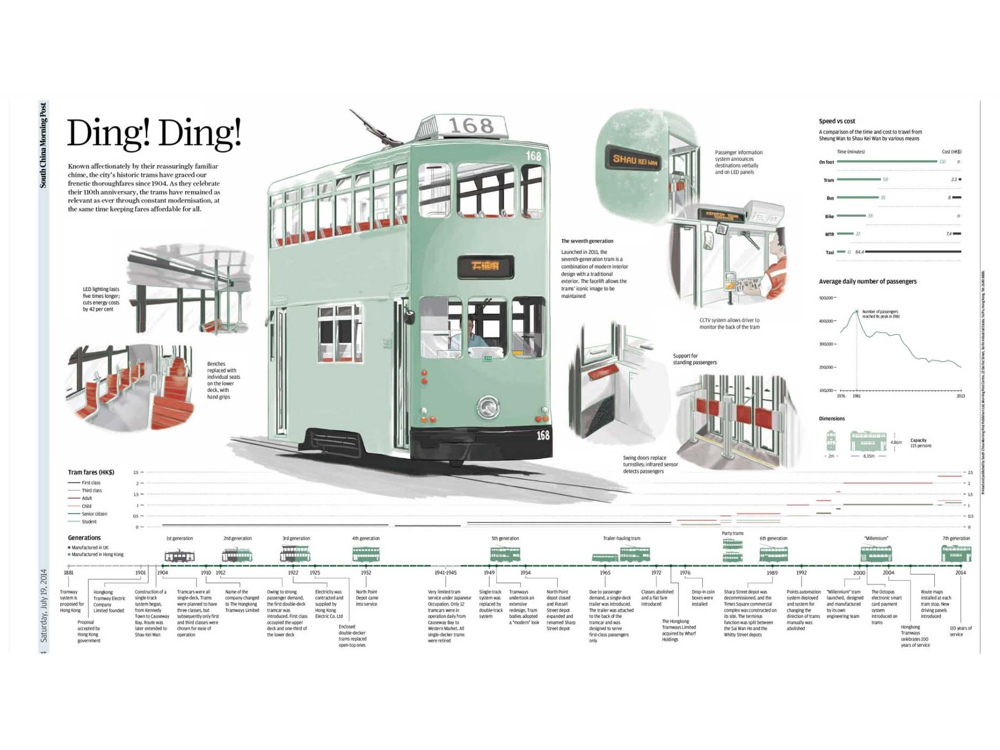

Información en gráficos figurativos

Ding! Ding!
Publicado en The SCMP Arcade.
Capital Punishment
Publicado en The SCMP Arcade.
Cracking the enigma
Publicado en The SCMP Arcade.
Godzilla is back
Publicado en The SCMP Arcade.
Información en gráficos no figurativos

10 Most Dangerous Countries for Journalists
Publicado en GOOD.
Killings of Journalists
Publicado en UNESCO.
Big Brother is watching you
Publicado en The SCMP Arcade.
Holiday Chill?
Publicado en The SCMP Arcade.